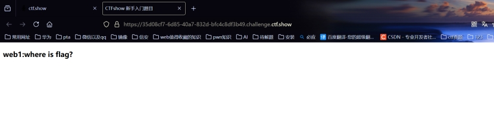
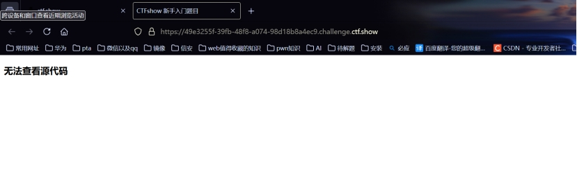
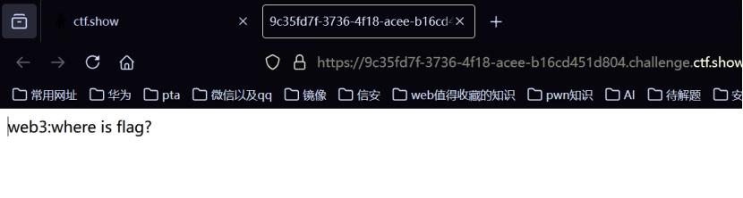
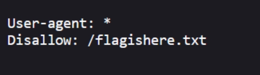
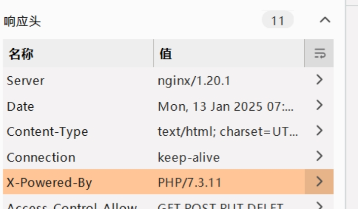
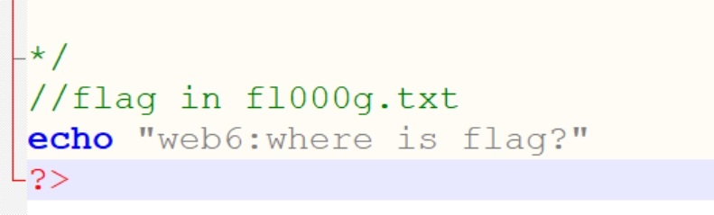
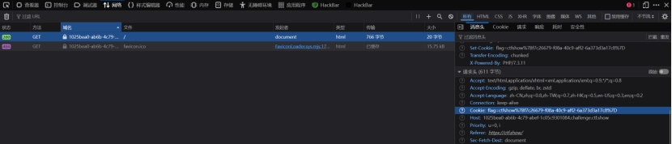

web1-10
Web1:

直接f12。看到flag
ctfshow{941628a1-7381-4612-9c0f-201bede5949c}
Web2:

看不了源码（右键不管用、f12不管用）
法一：不怕抓包
法二：firefox浏览器直接ctrl+u看源码
ctfshow{836f5d1a-952d-41fb-a059-748adf37147
Web3:

啥都没有，bp抓包
ctfshow{f40cb561-9170-4abf-96b5-422812ef996f}
Web4:
bp抓包
没思路，看题目提示：总有人把后台地址写入robots，帮黑阔大佬们引路。
Robots:即robots.txt。这个文件可能会泄露部分网站目录
在url后面添加/robots.txt

复制/flagishere.txt，替换url后面的robots.txt
进去
ctfshow{5e980d7b-1652-4fd2-aa6f-fb9ce4e92f8d}
Web5
Bp抓包无果，查看提示：phps源码泄露有时候能帮上忙
这道题是php源码泄露，查看响应头，

X-Powered-Bys后面是php及其版本。
php的主页文件是index.php
访问index.php发现还是原来的界面
然后在后面加一个s可以下载一个文件
ctfshow{fb1c7fe7-f1d8-47de-be54-2a32756be6c8}
Web6
看提示:解压源码到当前目录，测试正常，收工
网站主页源码文件名称为www.zip，然后再url后添加/www.zip对网站主页源码进行下载,然后进行解压

ctfshow{83099411-6ed3-4ec1-9336-8fe1d68f5bad}
Web7:
提示:版本控制很重要，但不要部署到生产环境更重要。
git代码泄露，直接访问/.git即可
在Linux当中.开头的文件为隐藏文件,网站管理员可能会存在在没有删除.git隐藏文件的情况下就将网站上线，这样就会造成源码泄露
ctfshow{3caad85e-71c8-4867-9a13-a6cc8a85c4ff}
Web8:
提示:版本控制很重要，但不要部署到生产环境更重要。
svn泄露,直接访问/.svn即可
在Linux当中.开头的文件为隐藏文件,网站管理员可能会存在在没有删除.svn隐藏文件的情况下就将网站上线，这样就会造成源码泄露
ctfshow{2c8a2ed9-20cd-4c41-b0a6-42a3801bf904}
Web9
提示:发现网页有个错别字？赶紧在生产环境vim改下，不好，死机了
vim缓存信息泄露，直接访问/index.php.swp即可
ctfshow{6b667116-0c5a-4fca-b6ad-f589fc29fb9f}
Web10
提示:cookie 只是一块饼干，不能存放任何隐私数据

ctfshow{f7c26679-f08a-40c9-aff2-6a373d3a17c8}
1–10总结
1.无法查看源码？Firefox当中ctrl+u查看|bp|设置当中点出来
/robots.txt会泄露部分网站目录
2.php源码泄露：X-Powered-Bys后面是php及其版本。php的主页文件是index.php。然后在后面加一个s可以下载一个文件
3.网站主页源码文件名称为www.zip。/www.zip对网站主页源码进行下载,然后进行解压。本地看过之后在url进行操作
4.在Linux当中.开头的文件为隐藏文件,网站管理员可能会存在在没有删除.svn或者.git隐藏文件的情况下就将网站上线，这样就会造成源码泄露
5.vim缓存信息泄露，/index.php.swp